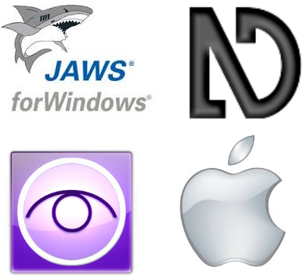
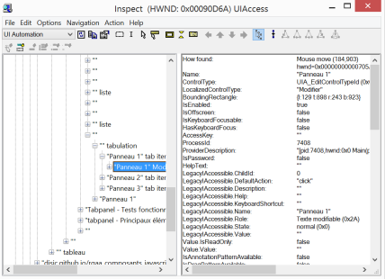

Fiche 7 : Base de référence - Tests de restitution
Introduction - cas utilisateur
Si l'immense majorité des composants définis par la spécification HTML n'a pas besoin d'être testée, ce n'est pas le cas des composants développés avec JavaScript et ARIA.
Si le support d'ARIA par les navigateurs ne pose plus de problème, les technologies d'assistance n'offrent pas encore un support suffisamment robuste et l'on peut constater de grandes variations entre elles.
Au delà de ce problème de support d'ARIA par les technologies d'assistance, le simple fait qu'un composant respecte strictement un motif de conception n'est pas une garantie suffisante quant à son accessibilité réelle. En effet les composants peuvent être enrichis de fonctionnalités particulières, agir dans le cadre d'une application et interagir avec d'autres composants.
Il est donc primordial que ces composants soient testés en situation réelle avec les technologies d'assistance des utilisateurs.
Base de référence
Il serait compliqué de tester un composant ou une application avec l'ensemble des technologies d'assistance sans peser très fortement sur la production des contenus web et des applications dont une des caractéristiques est la grande versatilité. Il faut publier vite, souvent. Une application Web n'est, en réalité, qu'une longue suite ininterrompue de commits de publication.
Par ailleurs, les technologies d'assistance ont des parts d'utilisation très diverses. Certaines d'entre elles sont confidentielles ou très spécifiques alors que d'autres couvrent une très large partie des utilisateurs.
Enfin, le support d'ARIA reste très inconstant. Certaines technologies d'assistances, particulièrement celles pour qui ARIA n'a qu'une utilité secondaire, sont en effet en retard. Obliger à ce que les composants développés avec JavaScript et ARIA soient compatibles avec elles condamnerait le développement web « accessible » à être très en retrait des technologies web modernes ou à recourir à des alternatives très coûteuses à produire, lorsque c'est possible.
Cela a amené le RGAA à définir la notion de « base de référence » qui consiste à définir des combinaisons associant des lecteurs d'écran, des navigateurs et des systèmes d'exploitation pour couvrir la part la plus importante des utilisateurs.
La base de référence est constituée des configurations (technologie d'assistance, système d'exploitation, navigateur) qui permettent de déclarer qu'un dispositif HTML5/ARIA est « compatible avec l'accessibilité », comme défini par WCAG 2.
Elle est établie par consensus à partir de la liste des technologies d'assistance dont l'usage est suffisamment répandu ou dans certains cas (par exemple pour macOS) lorsqu'elle est fournie de manière native et constitue le moyen privilégié d'accès à l'information et aux fonctionnalités.
La combinaison qui apparait la plus satisfaisante est constituée de :
- NVDA et Firefox sur Windows ;
- JAWS et Firefox ou Internet Explorer9+ sur Windows ;
- VoiceOver et Safari sur macOS.
La question des versions de lecteur d'écran retenues est importante et obéit aux règles suivantes :
- lorsque le lecteur d'écran est publié sous une licence gratuite, comme NVDA, c'est la version courante qui fait office de référence ;
- lorsque le lecteur d'écran est publié sous une licence payante, comme JAWS, c'est la version précédant la version courante qui fait office de référence.
Règles complémentaires :
Un certain nombre de règles complémentaires sont associées à l'utilisation d'une base de référence :
- L'ensemble des dispositifs HTML5/ARIA ou leurs alternatives doivent être pleinement fonctionnels, sur l'ensemble des pages du site, sans nécessiter de changement de technologie d'assistance en cours d'utilisation ;
- Lorsque des alternatives à des dispositifs HTML5/ARIA sont proposées, elles ne doivent pas nécessiter la désactivation d'une technologie (par exemple JavaScript ou le plugin Flash), sauf s'il s'agit d'une fonctionnalité proposée par le site lui-même. Par exemple :
- le site met à disposition une version alternative conforme pleinement fonctionnelle sans le recours aux technologies dont l'usage est non compatible avec l'accessibilité ;
- le site met à disposition une fonctionnalité de remplacement des dispositifs HTML5/ARIA par des dispositifs alternatifs compatibles ;
- un moyen est mis à disposition des utilisateurs de technologies d'assistance pour signaler les problèmes rencontrés et obtenir, via un dispositif de compensation, les informations qui seraient rendues indisponibles ;
- si une déclaration de conformité est établie, elle doit comporter la liste des technologies d'assistance avec lesquelles les dispositifs HTML5/ARIA ont été testés et les résultats de ces tests (par exemple "supporté", "non supporté", "supporté partiellement") au moins.
Cas des environnements maitrisés
Un environnement maitrisé est constitué d'une plateforme de diffusion dont la maîtrise est complète. Cela signifie que les utilisateurs sont connus et que leurs technologies sont contrôlées. Par exemple, lorsque le site web est exclusivement diffusé dans un environnement GNU/Linux, les tests devront être réalisés uniquement sur les navigateurs et les technologies d'assistance utilisés sur cette plateforme. Cette base de référence se substitue à la base de référence utilisée en environnement non maîtrisé.
Élargissement de la base de référence
La base de référence n'est pas une fin en soi, mais juste un socle technique minimum qui assure que, dans la majorité des cas, les composants et les applications pourront être effectivement utilisés.
Elle peut et devrait être étendue à des technologies d'assistance dont l'usage est identifié et concerne effectivement les utilisateur des sites et applications.
Sont plus particulièrement visées les plateformes de diffusions mobiles, téléphones ou tablettes, dont la grande hétérogénéité et l'évolution constante n'ont pas permis de les prendre en compte. De même, des plateformes dont l'utilisation est moindre, comme GNU/LINUX devraient également, si c'est pertinent dans le contexte de diffusion, être prises en compte afin d'assurer une accessibilité la plus large possible.
Méthodologie de test ARIA
La méthodologie de test suivante peut être appliquée :
- vérifier si nécessaire la conformité du motif de conception utilisé ;
- si possible, tester la restitution avec la base de référence choisie avant l'intégration du composant dans l'application ;
- lors de l'intégration, vérifier avec des tests sur la base de référence choisie que le composant a une restitution cohérente et efficace.
Tester la restitution d'un composant avant son intégration dans une application est toujours une bonne idée. Cela permet, dans le cas où les tests en intégration sont défaillants, de cibler rapidement l'origine du problème : le composant lui-même ou des effets de bords de l'intégration et des interactions avec l'application ou d'autres composants en utilisation.
Note : Les modèles de conception ARIA sont actuellement en cours de mise à jour par les auteurs de l'API ARIA (passage de la version 1.0 à la version 1.1). Il faudra néanmoins un certain temps avant que les technologies d'assistance implémentent ces nouveaux modèles de conception.
Le RGAA propose dans ses ressources :
Test de conformité du motif de conception utilisé
Le RGAA propose dans ses ressources une plateforme de démonstration de 12 motifs de conception avec l'indication des restitutions obtenues et une grille de tests complète. Vous pouvez réutiliser la grille de tests pour vos propres besoins. Attention : les composants proposés ne peuvent pas être utilisés en production. Ils sont destinés exclusivement à des tests et à servir de référence pour vos propres tests.
Tests de restitution
Les tests de restitution doivent être effectués en utilisant les lecteurs d'écran de la base de référence, ce qui implique d'en apprendre le fonctionnement. Cette page vous propose un certain nombre de ressources.
L'utilisation d'un lecteur d'écran demande un certain temps d'apprentissage. Si le test basique d'un composant ne devrait pas poser de problème, dans le cas de tests menés sur des applications entières, le recours à des prestataires spécialisés est fortement recommandé.
Soyez également prudent avec les tests réalisés avec des utilisateurs en situation réelle. Si mener des tests utilisateurs peut grandement améliorer l'ergonomie et l'utilisabilité des applications, ils peuvent échouer à remonter des erreurs d'implémentation.
Outil de débogage
Lorsqu'un composant se montre défaillant, il est indispensable de pouvoir déterminer avec précision si l'ensemble des informations sont bien mises à disposition du lecteur d'écran. Pour le vérifier, vous pouvez utiliser des logiciels ou des plugins qui vous permettront d'explorer l'accessible tree ou les API d'accessibilité système.
Exemple : inspecteur d'objet du SDK de Windows
 L'inspecteur d'objet vous permet de parcourir l'ensemble de l'arborescence système pour analyser les propriétés des objets telles qu'elles sont mises à disposition par l'API système.
Pour ce qui concerne l'accessibilité, les propriétés « LegacyIAccessible.[propriété] » sont celles qui vont nous intéresser.
Cet outil est très puissant. Il permet de choisir le mode d'interaction (tabulation ou pointeur), de scénariser des actions, d'enregistrer des logs.
Dans le cadre d'un test de composant, il peut permettre de vérifier si les propriétés d'état sont bien mises à jour par exemple.
Exemple : AViewer
Le logiciel AViewer proposé par la société The Pacellio Group (TPG) poursuit le même but en ajoutant plusieurs interfaces comme IAccessible2 qui est l'API utilisée par Firefox par exemple.
Ce logiciel est tout aussi efficace que l'inspecteur d'objet de Windows, mais son fonctionnement est plus instable.
Autres logiciels ou plugin
Toutes les plateformes proposent un outil similaire, par exemple sur OSX, il s'agit de Accessibilty Inspector et Accerciser pour Linux/Gnome.
Enfin, signalons également le plugin « Dom Inspector » qui propose un accès simple à l'accessible tree avec Firefox.